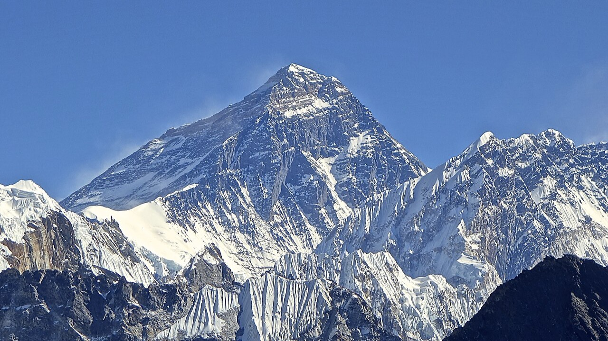
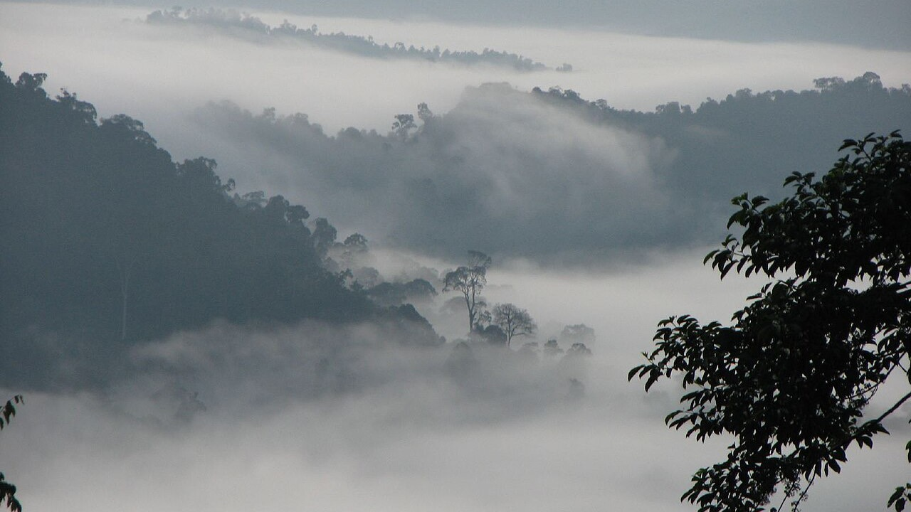
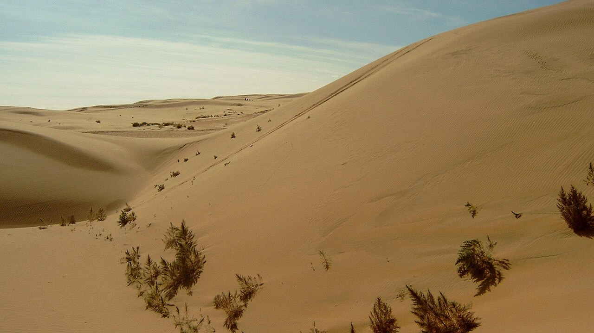
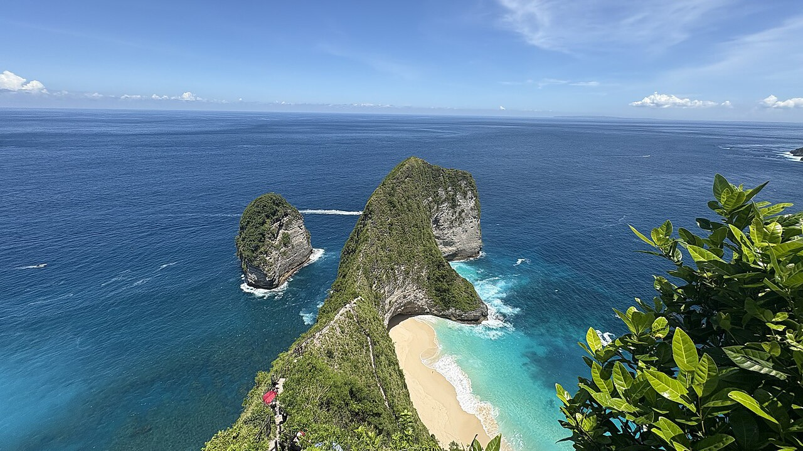
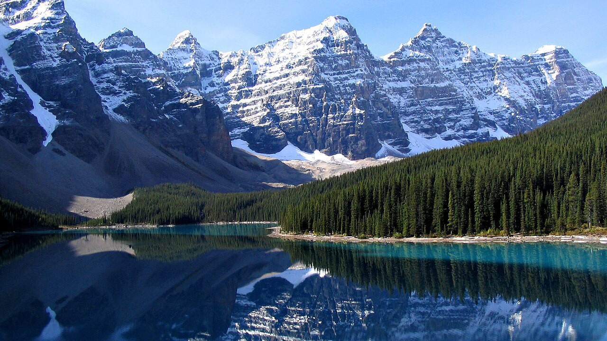
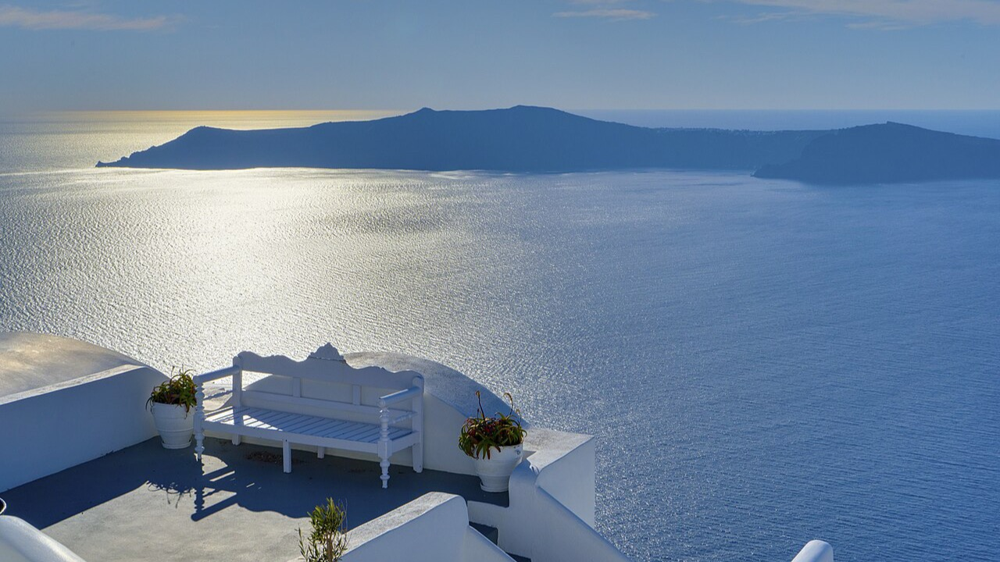
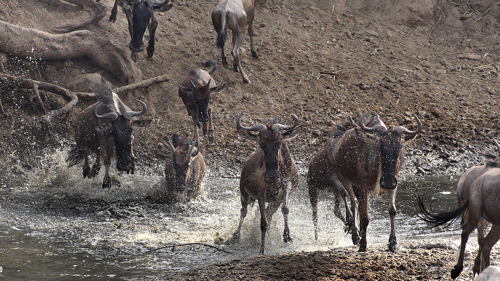
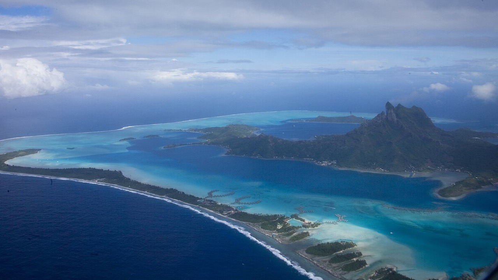

| Turismo Mundial | América Europa Asia África Oceanía |
|
Inicio / Asia AsiaEl Himalaya, selvas tropicales y arrecifes |
| El continente de los extremos | Asia es el continente más grande y poblado del mundo. En él se encuentran las montañas más altas del planeta, selvas tropicales llenas de vida, inmensos desiertos y miles de islas rodeadas de arrecifes. Sus templos, tradiciones y cocinas ofrecen experiencias únicas a cada visitante. |
Actividad principal, hotel y restaurante recomendados en cada uno
|

Nepal
HimalayaLa cordillera más alta del mundo, donde se encuentra el monte Everest.
|

Malasia
Selva tropical de BorneoUna de las selvas más antiguas del planeta, hábitat natural del orangután.
|
||||||||||||
|

Mongolia
Desierto de GobiGran desierto frío de dunas, estepas y yacimientos de fósiles de dinosaurios.
|

Indonesia
Costas y arrecifes de BaliAcantilados y aguas tropicales del Triángulo de Coral, con gran biodiversidad marina.
|
|
 América |
 Europa |
 África |
 Oceanía |
|
Turismo Mundial
Guía de viaje por los cinco continentes. |
ContinentesAméricaEuropa Asia África Oceanía |
InformaciónInicio |
| Khorne © 2026 · Página hecha con HTML y CSS | ||